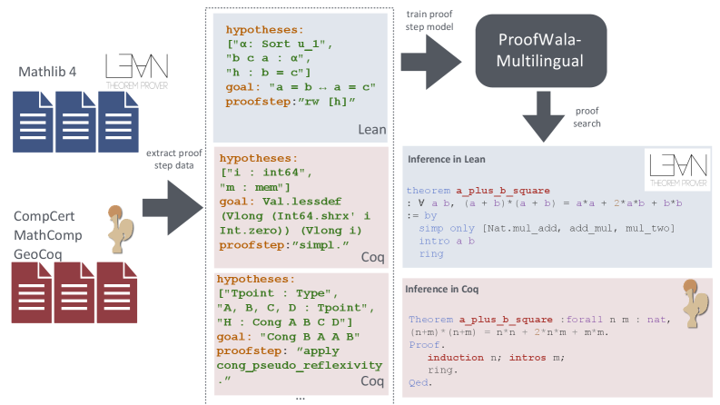

ProofWala provides a meta-programmed Lean 4 interaction layer for tactic-level tracing and trains provers on Lean Mathlib and Rocq.
Abstract
Neural approaches to theorem proving require robust infrastructure for interfacing with interactive theorem provers (ITPs), extracting structured proof data, and executing proof search at scale. However, existing tooling is often assistant-specific and oriented toward file-level execution, making repository-scale analysis and parallel experimentation challenging. We present ProofWala, a multilingual proof engineering framework built around \texttt{itp-interface}, a reusable library for programmatic interaction with ITPs. For Lean 4, we implement a meta-programmed interaction layer executing inside the elaborator, enabling semantically faithful tactic-level tracing alongside declaration- and dependency-level extraction across entire repositories. This design extends beyond traditional REPL-style interaction by supporting project-wide analysis, environment cloning, and pooled execution of proof states. The same interface abstraction supports multiple versions of Rocq, yielding a unified cross-assistant pipeline. Built on this infrastructure, ProofWala provides standardized multilingual proof datasets, model training utilities, and parallel proof search algorithms. Using the framework, we demonstrate that multilingual training across Lean and Rocq enables cross-lingual and cross-domain transfer. We observe statistically significant improvements on Lean Mathlib and in domain adaptation (CategoryTheory), while other settings exhibit consistent upward trends. We open-source the full framework, parallel proof search module, datasets, and models across two repositories: ProofWala (https://github.com/trishullab/proof-wala) and the itp-interface library (https://github.com/trishullab/itp-interface).
Problem
Neural theorem proving requires infrastructure for interfacing with ITPs, extracting structured proof data, and executing proof search at scale. Existing tooling is often assistant-specific and oriented toward file-level execution, making repository-scale analysis and parallel experimentation difficult.
Approach
ProofWala is a multilingual proof engineering framework built around itp-interface, a reusable library for programmatic ITP interaction. For Lean 4, a meta-programmed interaction layer executes inside the elaborator, enabling tactic-level tracing and declaration/dependency extraction across entire repositories. The same interface abstraction supports multiple Rocq versions, yielding a unified cross-assistant pipeline with parallel proof search.

Figure 2 : Overview of the ProofWala framework. The interface module enables repository-scale extraction and programmable interaction with Lean and Rocq . Extracted traces are used for training proof-step predictors. The search module executes tactics—potentially in parallel—using cloned proof environments.
Results
Multilingual training across Lean and Rocq enables cross-lingual transfer. Statistically significant improvements are observed on Lean Mathlib (pass@1 rising from 24.92% to 26.84% with multilingual training, p=0.018) and in domain adaptation for CategoryTheory.